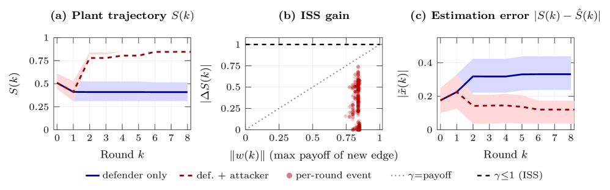
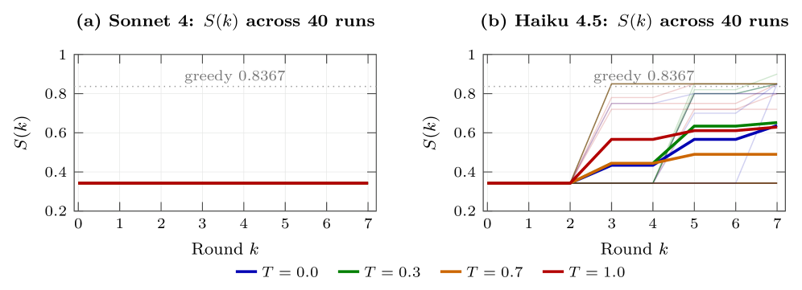

A composite Lyapunov function certifying stability of the agentic control architecture is machine-checked in Lean 4 with zero sorry.
Abstract
Agentic systems involved in high-stake decision-making under adversarial pressure need formal guarantees not offered by existing approaches. Motivated by the operational needs of security operations centers (SOCs) that must configure endpoint detection and response (EDR) policies under adversarial pressure, we present a tool-mediated architecture: LLM agents use deterministic tools (Stackelberg best-response, Bayesian observer updates, attack-graph primitives) and select from finite action catalogs enforced at the tool-output interface. A composite Lyapunov function machine-checked in Lean 4 with zero sorry certifies controllability, observability from asymmetric sensor data, and Input-to-State Stability (ISS) robustness under intelligent adversarial disturbance, with two corollaries extending the certificate to any controller or adversary from the catalogs. On 282 real enterprise attack graphs, the claims hold with margin. On paired offensive/defensive telemetry, a tool-mediated Claude Sonnet 4 controller reduces the attacker's expected payoff (game value) by 59% relative to a deterministic greedy baseline, with zero variance across 40 runs at four temperatures. A Claude Haiku 4.5 controller converges to suboptimal game values but stays catalog-bounded over an additional 40 runs, demonstrating that architectural stability is not dependent on the controller capability. The LLM agent's non-determinism furthers creative exploration of strategies, while the tool-mediated architecture ensures system stability.
Problem
LLM-based agentic systems for cyber defense are non-deterministic, with accuracy variance up to 15% even at temperature 0. Existing approaches lack formal guarantees of controllability, observability, and stability needed for high-stakes autonomous defense in security operations centers.
Approach
The authors present a tool-mediated architecture where LLM agents use deterministic tools (Stackelberg best-response, Bayesian observer updates, attack-graph primitives) and select from finite action catalogs enforced at the tool-output interface. A composite Lyapunov function decomposing into plant and estimator terms is machine-checked in Lean 4 with zero sorry, certifying controllability, observability from asymmetric sensor data, and Input-to-State Stability (ISS) robustness under intelligent adversarial disturbance.

Figure 1: Experiment 1 results on 282 graphs. (a) Plant trajectory S(k) : defender-only (blue) monotone 0.51\to 0.41 ; defender+attacker (red) stabilizes at \approx 0.85 . (b) ISS gain: all 602 disturbance events satisfy |\Delta S(k)|\leq\gamma=1.0 ; max excursion stays below 0.60 across all graphs. (c) Belief-truth game-value gap |S(k)-\hat{S}(k)| : defender-only plateaus at 0.33 ; defender+attac
Results
On 282 real enterprise attack graphs, all stability claims hold with margin (all 602 disturbance events satisfy the ISS gain bound). A tool-mediated Claude Sonnet 4 controller reduces the attacker's expected payoff by 59% relative to a deterministic greedy baseline, with zero variance across 40 runs at four temperatures. A Claude Haiku 4.5 controller converges to suboptimal game values but stays catalog-bounded over 40 additional runs, demonstrating architecture-level stability independent of controller capability.

Figure 2: Within-family scaling of LLM stability. (a) Sonnet 4: all 40 runs converge to S(k_{\text{final}})=0.3427 with \sigma=0 across temperatures; variance is zero. (b) Haiku 4.5: same architecture, weaker backbone — 19/40 runs reach S=0.3427 , 21/40 stall at 0.85 – 0.90 ( \sigma=0.249 , mean 0.603 ). Both controllers stay catalog-bounded ( 420/420 deployments on-catalog); the achieved S floor